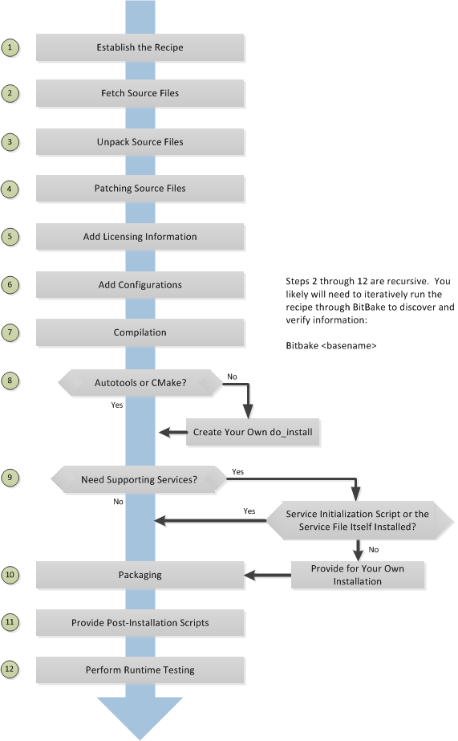

5 Scrivere una Nuova Ricetta
Recipes (.bb files) are fundamental components in the Yocto Project
environment. Each software component built by the OpenEmbedded build
system requires a recipe to define the component. This section describes
how to create, write, and test a new recipe.
Nota
For information on variables that are useful for recipes and for information about recipe naming issues, see the "Ricette" section of the Yocto Project Reference Manual.
5.1 Overview
The following figure shows the basic process for creating a new recipe. The remainder of the section provides details for the steps.


5.2 Locate or Automatically Create a Base Recipe
You can always write a recipe from scratch. However, there are three choices that can help you quickly get started with a new recipe:
devtool add: A command that assists in creating a recipe and an environment conducive to development.recipetool create: A command provided by the Yocto Project that automates creation of a base recipe based on the source files.Existing Recipes: Location and modification of an existing recipe that is similar in function to the recipe you need.
Nota
For information on recipe syntax, see the "Recipe Syntax" section.
5.2.1 Creating the Base Recipe Using devtool add
The devtool add command uses the same logic for auto-creating the
recipe as recipetool create, which is listed below. Additionally,
however, devtool add sets up an environment that makes it easy for
you to patch the source and to make changes to the recipe as is often
necessary when adding a recipe to build a new piece of software to be
included in a build.
You can find a complete description of the devtool add command in
the "A Closer Look at devtool add" section
in the Yocto Project Application Development and the Extensible Software
Development Kit (eSDK) manual.
5.2.2 Creating the Base Recipe Using recipetool create
recipetool create automates creation of a base recipe given a set of
source code files. As long as you can extract or point to the source
files, the tool will construct a recipe and automatically configure all
pre-build information into the recipe. For example, suppose you have an
application that builds using Autotools. Creating the base recipe using
recipetool results in a recipe that has the pre-build dependencies,
license requirements, and checksums configured.
To run the tool, you just need to be in your Build Directory and have sourced the build environment setup script (i.e. oe-init-build-env). To get help on the tool, use the following command:
$ recipetool -h
NOTE: Starting bitbake server...
usage: recipetool [-d] [-q] [--color COLOR] [-h] <subcommand> ...
OpenEmbedded recipe tool
options:
-d, --debug Enable debug output
-q, --quiet Print only errors
--color COLOR Colorize output (where COLOR is auto, always, never)
-h, --help show this help message and exit
subcommands:
newappend Create a bbappend for the specified target in the specified layer
create Create a new recipe
setvar Set a variable within a recipe
appendfile Create/update a bbappend to replace a target file
appendsrcfiles Create/update a bbappend to add or replace source files
appendsrcfile Create/update a bbappend to add or replace a source file
edit Edit the recipe and appends for the specified target. This obeys $VISUAL if set,
otherwise $EDITOR, otherwise vi.
Use recipetool <subcommand> --help to get help on a specific command
Running recipetool create -o OUTFILE creates the base recipe and
locates it properly in the layer that contains your source files.
Here are some syntax examples:
Use this syntax to generate a recipe based on source. Once generated, the recipe resides in the existing source code layer:
recipetool create -o OUTFILE sourceUse this syntax to generate a recipe using code that you extract from source. The extracted code is placed in its own layer defined by EXTERNALSRC:
recipetool create -o OUTFILE -x EXTERNALSRC sourceUse this syntax to generate a recipe based on source. The options direct
recipetoolto generate debugging information. Once generated, the recipe resides in the existing source code layer:recipetool create -d -o OUTFILE source
5.2.3 Locating and Using a Similar Recipe
Before writing a recipe from scratch, it is often useful to discover whether someone else has already written one that meets (or comes close to meeting) your needs. The Yocto Project and OpenEmbedded communities maintain many recipes that might be candidates for what you are doing. You can find a good central index of these recipes in the OpenEmbedded Layer Index.
Working from an existing recipe or a skeleton recipe is the best way to get started. Here are some points on both methods:
Locate and modify a recipe that is close to what you want to do: This method works when you are familiar with the current recipe space. The method does not work so well for those new to the Yocto Project or writing recipes.
Some risks associated with this method are using a recipe that has areas totally unrelated to what you are trying to accomplish with your recipe, not recognizing areas of the recipe that you might have to add from scratch, and so forth. All these risks stem from unfamiliarity with the existing recipe space.
Use and modify the following skeleton recipe: If for some reason you do not want to use
recipetooland you cannot find an existing recipe that is close to meeting your needs, you can use the following structure to provide the fundamental areas of a new recipe:DESCRIPTION = "" HOMEPAGE = "" LICENSE = "" SECTION = "" DEPENDS = "" LIC_FILES_CHKSUM = "" SRC_URI = ""
5.3 Storing and Naming the Recipe
Once you have your base recipe, you should put it in your own layer and name it appropriately. Locating it correctly ensures that the OpenEmbedded build system can find it when you use BitBake to process the recipe.
Storing Your Recipe: The OpenEmbedded build system locates your recipe through the layer's
conf/layer.conffile and the BBFILES variable. This variable sets up a path from which the build system can locate recipes. Here is the typical use:BBFILES += "${LAYERDIR}/recipes-*/*/*.bb \ ${LAYERDIR}/recipes-*/*/*.bbappend"
Consequently, you need to be sure you locate your new recipe inside your layer such that it can be found.
You can find more information on how layers are structured in the "Comprendere e Creare i Layer" section.
Naming Your Recipe: When you name your recipe, you need to follow this naming convention:
basename_version.bb
Use lower-cased characters and do not include the reserved suffixes
-native,-cross,-initial, or-devcasually (i.e. do not use them as part of your recipe name unless the string applies). Here are some examples (which includes the use of the string "git" as a special case of a version identifier):cups_2.4.12.bb gawk_5.3.2.bb psplash_git.bb
5.4 Running a Build on the Recipe
Creating a new recipe is usually an iterative process that requires using BitBake to process the recipe multiple times in order to progressively discover and add information to the recipe file.
Assuming you have sourced the build environment setup script (i.e.
oe-init-build-env) and you are in the Build Directory, use
BitBake to process your recipe. All you need to provide is the
basename of the recipe as described in the previous section:
$ bitbake basename
During the build, the OpenEmbedded build system creates a temporary work
directory for each recipe
(${WORKDIR})
where it keeps extracted source files, log files, intermediate
compilation and packaging files, and so forth.
The path to the per-recipe temporary work directory depends on the
context in which it is being built. The quickest way to find this path
is to use the bitbake-getvar utility:
$ bitbake-getvar -r basename WORKDIR
As an example, assume a Source Directory
top-level folder named bitbake-builds, a default Build Directory at
bitbake-builds/build, a cortexa57 PACKAGE_ARCH, poky
DISTRO and linux as TARGET_OS.
Furthermore, suppose your recipe is named foo_1.3.0.bb. In this
case, the work directory the build system uses to build the package
would be as follows:
bitbake-builds/build/tmp/work/cortexa57-poky-linux/foo/1.3.0
Nota
This covers the case when the PACKAGE_ARCH variable is set to its default value, TUNE_PKGARCH. This variable is sometimes set to MACHINE_ARCH. See the documentation of the PACKAGE_ARCH variable for more information.
Inside this directory you can find sub-directories such as image,
packages-split, and temp. After the build, you can examine these
to determine how well the build went.
Nota
You can find log files for each task in the recipe's temp
directory (e.g. bitbake-builds/build/tmp/work/cortexa57-poky-linux/foo/1.3.0/temp).
Log files are named log.taskname (e.g. log.do_configure,
log.do_fetch, and log.do_compile).
You can find more information about the build process in "L'Ambiente di Sviluppo di Yocto Project" chapter of the Yocto Project Overview and Concepts Manual.
5.5 Fetching Code
The first thing your recipe must do is specify how to fetch the source files. Fetching is controlled mainly through the SRC_URI variable. Your recipe must have a SRC_URI variable that points to where the source is located. For a graphical representation of source locations, see the "Sorgenti" section in the Yocto Project Overview and Concepts Manual.
The do_fetch task uses the prefix of each entry in the SRC_URI variable value to determine which fetcher to use to get your source files. It is the SRC_URI variable that triggers the fetcher. The do_patch task uses the variable after source is fetched to apply patches. The OpenEmbedded build system uses FILESOVERRIDES for scanning directory locations for local files in SRC_URI.
The SRC_URI variable in your recipe must define each unique location
for your source files. It is good practice to not hard-code version
numbers in a URL used in SRC_URI. Rather than hard-code these
values, use ${PV},
which causes the fetch process to use the version specified in the
recipe filename. Specifying the version in this manner means that
upgrading the recipe to a future version is as simple as renaming the
recipe to match the new version.
Here is a simple example from the strace recipe where the source comes from a single tarball. Notice the use of the PV variable:
SRC_URI = "${GITHUB_BASE_URI}/download/v${PV}/strace-${PV}.tar.xz \
Files mentioned in SRC_URI whose names end in a typical archive
extension (e.g. .tar, .tar.gz, .tar.bz2, .zip, and so
forth), are automatically extracted during the
do_unpack task. For
another example that specifies these types of files, see the
"Building an Autotooled Package" section.
Another way of specifying source is from an SCM. For Git repositories,
you must specify SRCREV and you should specify PV to include
a + sign in its definition. Here is an example from the recipe
l3afpad_git.bb:
SRC_URI = "git://github.com/stevenhoneyman/l3afpad.git;branch=master;protocol=https"
PV = "0.8.18.1.11+git"
SRCREV = "3cdccdc9505643e50f8208171d9eee5de11a42ff"
If your SRC_URI statement includes URLs pointing to individual files
fetched from a remote server other than a version control system,
BitBake attempts to verify the files against checksums defined in your
recipe to ensure they have not been tampered with or otherwise modified
since the recipe was written. Multiple checksums are supported:
SRC_URI[md5sum], SRC_URI[sha1sum], SRC_URI[sha256sum],
SRC_URI[sha384sum] and SRC_URI[sha512sum], but only
SRC_URI[sha256sum] is commonly used.
Nota
SRC_URI[md5sum] used to also be commonly used, but it is deprecated
and should be replaced by SRC_URI[sha256sum] when updating existing
recipes.
If your SRC_URI variable points to more than a single URL (excluding
SCM URLs), you need to provide the sha256 checksum for each URL. For these
cases, you provide a name for each URL as part of the SRC_URI and then
reference that name in the subsequent checksum statements. Here is an example
combining lines from the files git.inc and git_2.24.1.bb:
SRC_URI = "${KERNELORG_MIRROR}/software/scm/git/git-${PV}.tar.gz;name=tarball \
${KERNELORG_MIRROR}/software/scm/git/git-manpages-${PV}.tar.gz;name=manpages"
SRC_URI[tarball.sha256sum] = "ad5334956301c86841eb1e5b1bb20884a6bad89a10a6762c958220c7cf64da02"
SRC_URI[manpages.sha256sum] = "9a7ae3a093bea39770eb96ca3e5b40bff7af0b9f6123f089d7821d0e5b8e1230"
The proper value for the sha256 checksum might be available together
with other signatures on the download page for the upstream source (e.g.
md5, sha1, sha256, GPG, and so forth). Because the
OpenEmbedded build system typically only deals with sha256sum,
you should verify all the signatures you find by hand.
If no SRC_URI checksums are specified when you attempt to build the recipe, or you provide an incorrect checksum, the build will produce an error for each missing or incorrect checksum. As part of the error message, the build system provides the checksum string corresponding to the fetched file. Once you have the correct checksums, you can copy and paste them into your recipe and then run the build again to continue.
Nota
As mentioned, if the upstream source provides signatures for verifying the downloaded source code, you should verify those manually before setting the checksum values in the recipe and continuing with the build.
This final example is a bit more complicated and is from the rxvt-unicode recipe. The example's SRC_URI statement identifies multiple files as the source files for the recipe: a tarball, a patch file, a desktop file, and an icon:
SRC_URI = "http://dist.schmorp.de/rxvt-unicode/Attic/rxvt-unicode-${PV}.tar.bz2 \
file://xwc.patch \
file://rxvt.desktop \
file://rxvt.png"
When you specify local files using the file:// URI protocol, the
build system fetches files from the local machine. The path is relative
to the FILESPATH variable
and searches specific directories in a certain order:
${BP},
${BPN}, and
files. The directories are assumed to be subdirectories of the
directory in which the recipe or append file resides. For another
example that specifies these types of files, see the
"building a single .c file package" section.
The previous example also specifies a patch file. Patch files are files
whose names usually end in .patch or .diff but can end with
compressed suffixes such as diff.gz and patch.bz2, for example.
The build system automatically applies patches as described in the
"Patching Code" section.
5.5.1 Fetching Code Through Firewalls
Some users are behind firewalls and need to fetch code through a proxy. See the "FAQ" chapter for advice.
5.5.2 Limiting the Number of Parallel Connections
Some users are behind firewalls or use servers where the number of parallel connections is limited. In such cases, you can limit the number of fetch tasks being run in parallel by adding the following to your build/conf/local.conf file:
do_fetch[number_threads] = "4"
5.6 Unpacking Code
During the build, the
do_unpack task unpacks
the source with ${S}
pointing to where it is unpacked.
By default, the value of ${S} is already set to where the
OpenEmbedded Build System will unpack the source code, by using the
value of UNPACKDIR and BP.
You typically don't need to set S explicitly. If processing your recipe
using BitBake successfully unpacks the source files, you can verify that the
directory pointed to by ${S} is the root of your source code.
Nota
It used to be that when fetching with Git, recipes should explicitly set
S to ${WORKDIR}/git: this is no longer the case. See
S = ${WORKDIR}/git and S = ${UNPACKDIR}/git should be removed for more information.
5.7 Patching Code
Sometimes it is necessary to patch code after it has been fetched. Any
files mentioned in SRC_URI whose names end in .patch or
.diff or compressed versions of these suffixes (e.g. diff.gz,
patch.bz2, etc.) are treated as patches. The
do_patch task
automatically applies these patches.
The build system should be able to apply patches with the "-p1" option (i.e. one directory level in the path will be stripped off). If your patch needs to have more directory levels stripped off, specify the number of levels using the "striplevel" option in the SRC_URI entry for the patch. Alternatively, if your patch needs to be applied in a specific subdirectory that is not specified in the patch file, use the "patchdir" option in the entry.
As with all local files referenced in
SRC_URI using file://,
you should place patch files in a directory next to the recipe either
named the same as the base name of the recipe
(BP and
BPN) or "files".
5.8 Licenze
Your recipe needs to define variables related to the license under which the software is distributed. See the Campi di Licenza della Ricetta section in the Contributor Guide for details.
5.9 Dependencies
Most software packages have a short list of other packages that they require, which are called dependencies. These dependencies fall into two main categories: build-time dependencies, which are required when the software is built; and runtime dependencies, which are required to be installed on the target in order for the software to run.
Within a recipe, you specify build-time dependencies using the DEPENDS variable. Although there are nuances, items specified in DEPENDS should be names of other recipes. It is important that you specify all build-time dependencies explicitly.
Another consideration is that configure scripts might automatically check for optional dependencies and enable corresponding functionality if those dependencies are found. If you wish to make a recipe that is more generally useful (e.g. publish the recipe in a layer for others to use), instead of hard-disabling the functionality, you can use the PACKAGECONFIG variable to allow functionality and the corresponding dependencies to be enabled and disabled easily by other users of the recipe.
Similar to build-time dependencies, you specify runtime dependencies
through a variable -
RDEPENDS, which is
package-specific. All variables that are package-specific need to have
the name of the package added to the end as an override. Since the main
package for a recipe has the same name as the recipe, and the recipe's
name can be found through the
${PN} variable, then
you specify the dependencies for the main package by setting
RDEPENDS:${PN}. If the package were named ${PN}-tools, then you
would set RDEPENDS:${PN}-tools, and so forth.
Some runtime dependencies will be set automatically at packaging time. These dependencies include any shared library dependencies (i.e. if a package "example" contains "libexample" and another package "mypackage" contains a binary that links to "libexample" then the OpenEmbedded build system will automatically add a runtime dependency to "mypackage" on "example"). See the "Dipendenze di Runtime Aggiunte Automaticamente" section in the Yocto Project Overview and Concepts Manual for further details.
5.10 Configuring the Recipe
Most software provides some means of setting build-time configuration options before compilation. Typically, setting these options is accomplished by running a configure script with options, or by modifying a build configuration file.
Nota
As of Yocto Project Release 1.7, some of the core recipes that
package binary configuration scripts now disable the scripts due to
the scripts previously requiring error-prone path substitution. The
OpenEmbedded build system uses pkg-config now, which is much more
robust. You can find a list of the *-config scripts that are disabled
in the "Binary Configuration Scripts Disabled" section
in the Yocto Project Reference Manual.
A major part of build-time configuration is about checking for build-time dependencies and possibly enabling optional functionality as a result. You need to specify any build-time dependencies for the software you are building in your recipe's DEPENDS value, in terms of other recipes that satisfy those dependencies. You can often find build-time or runtime dependencies described in the software's documentation.
The following list provides configuration items of note based on how your software is built:
Autotools: If your source files have a
configure.acfile, then your software is built using Autotools. If this is the case, you just need to modify the configuration.When using Autotools, your recipe needs to inherit the autotools* class and it does not have to contain a do_configure task. However, you might still want to make some adjustments. For example, you can set EXTRA_OECONF or PACKAGECONFIG_CONFARGS to pass any needed configure options that are specific to the recipe.
CMake: If your source files have a
CMakeLists.txtfile, then your software is built using CMake. If this is the case, you just need to modify the configuration.When you use CMake, your recipe needs to inherit the cmake class and it does not have to contain a do_configure task. You can make some adjustments by setting EXTRA_OECMAKE to pass any needed configure options that are specific to the recipe.
Nota
If you need to install one or more custom CMake toolchain files that are supplied by the application you are building, install the files to
${D}${datadir}/cmake/Modulesduring do_install.Other: If your source files do not have a
configure.acorCMakeLists.txtfile, then your software is built using some method other than Autotools or CMake. If this is the case, you normally need to provide a do_configure task in your recipe unless, of course, there is nothing to configure.Even if your software is not being built by Autotools or CMake, you still might not need to deal with any configuration issues. You need to determine if configuration is even a required step. You might need to modify a Makefile or some configuration file used for the build to specify necessary build options. Or, perhaps you might need to run a provided, custom configure script with the appropriate options.
For the case involving a custom configure script, you would run
./configure --helpand look for the options you need to set.
Once configuration succeeds, it is always good practice to look at the
log.do_configure file to ensure that the appropriate options have
been enabled and no additional build-time dependencies need to be added
to DEPENDS. For example, if the configure script reports that it
found something not mentioned in DEPENDS, or that it did not find
something that it needed for some desired optional functionality, then
you would need to add those to DEPENDS. Looking at the log might
also reveal items being checked for, enabled, or both that you do not
want, or items not being found that are in DEPENDS, in which case
you would need to look at passing extra options to the configure script
as needed. For reference information on configure options specific to
the software you are building, you can consult the output of the
./configure --help command within ${S} or consult the software's
upstream documentation.
5.11 Using Headers to Interface with Devices
If your recipe builds an application that needs to communicate with some
device or needs an API into a custom kernel, you will need to provide
appropriate header files. Under no circumstances should you ever modify
the existing
meta/recipes-kernel/linux-libc-headers/linux-libc-headers.inc file.
These headers are used to build libc and must not be compromised
with custom or machine-specific header information. If you customize
libc through modified headers all other applications that use
libc thus become affected.
Nota
Never copy and customize the libc header file (i.e.
meta/recipes-kernel/linux-libc-headers/linux-libc-headers.inc).
The correct way to interface to a device or custom kernel is to use a separate package that provides the additional headers for the driver or other unique interfaces. When doing so, your application also becomes responsible for creating a dependency on that specific provider.
Consider the following:
Never modify
linux-libc-headers.inc. Consider that file to be part of thelibcsystem, and not something you use to access the kernel directly. You should accesslibcthrough specificlibccalls.Applications that must talk directly to devices should either provide necessary headers themselves, or establish a dependency on a special headers package that is specific to that driver.
For example, suppose you want to modify an existing header that adds I/O control or network support. If the modifications are used by a small number programs, providing a unique version of a header is easy and has little impact. When doing so, bear in mind the guidelines in the previous list.
Nota
If for some reason your changes need to modify the behavior of the libc,
and subsequently all other applications on the system, use a .bbappend
to modify the linux-kernel-headers.inc file. However, take care to not
make the changes machine specific.
Consider a case where your kernel is older and you need an older
libc ABI. The headers installed by your recipe should still be a
standard mainline kernel, not your own custom one.
When you use custom kernel headers you need to get them from STAGING_KERNEL_DIR, which is the directory with kernel headers that are required to build out-of-tree modules. Your recipe will also need the following:
do_configure[depends] += "virtual/kernel:do_shared_workdir"
5.12 Compilation
During a build, the do_compile task happens after source is fetched, unpacked, and configured. If the recipe passes through do_compile successfully, nothing needs to be done.
However, if the compile step fails, you need to diagnose the failure. Here are some common issues that cause failures.
Nota
For cases where improper paths are detected for configuration files
or for when libraries/headers cannot be found, be sure you are using
the more robust pkg-config. See the note in section
"Configuring the Recipe" for additional information.
Parallel build failures: These failures manifest themselves as intermittent errors, or errors reporting that a file or directory that should be created by some other part of the build process could not be found. This type of failure can occur even if, upon inspection, the file or directory does exist after the build has failed, because that part of the build process happened in the wrong order.
To fix the problem, you need to either satisfy the missing dependency in the Makefile or whatever script produced the Makefile, or (as a workaround) set PARALLEL_MAKE to an empty string:
PARALLEL_MAKE = ""
For information on parallel Makefile issues, see the "Debugging Parallel Make Races" section.
Improper host path usage: This failure applies to recipes building for the target or "nativesdk" only. The failure occurs when the compilation process uses improper headers, libraries, or other files from the host system when cross-compiling for the target.
To fix the problem, examine the
log.do_compilefile to identify the host paths being used (e.g./usr/include,/usr/lib, and so forth) and then either add configure options, apply a patch, or do both.Failure to find required libraries/headers: If a build-time dependency is missing because it has not been declared in DEPENDS, or because the dependency exists but the path used by the build process to find the file is incorrect and the configure step did not detect it, the compilation process could fail. For either of these failures, the compilation process notes that files could not be found. In these cases, you need to go back and add additional options to the configure script as well as possibly add additional build-time dependencies to DEPENDS.
Occasionally, it is necessary to apply a patch to the source to ensure the correct paths are used. If you need to specify paths to find files staged into the sysroot from other recipes, use the variables that the OpenEmbedded build system provides (e.g. STAGING_BINDIR, STAGING_INCDIR, STAGING_DATADIR, and so forth).
5.13 Installing
During do_install, the task copies the built files along with their
hierarchy to locations that would mirror their locations on the target
device. The installation process copies files from the
${S},
${B}, and
${UNPACKDIR}
directories to the ${D}
directory to create the structure as it should appear on the target
system.
How your software is built affects what you must do to be sure your software is installed correctly. The following list describes what you must do for installation depending on the type of build system used by the software being built:
Autotools and CMake: If the software your recipe is building uses Autotools or CMake, the OpenEmbedded build system understands how to install the software. Consequently, you do not have to have a do_install task as part of your recipe. You just need to make sure the install portion of the build completes with no issues. However, if you wish to install additional files not already being installed by
make install, you should do this using ado_install:appendfunction using the install command as described in the "Manual" bulleted item later in this list.Other (using
make install): You need to define a do_install function in your recipe. The function should calloe_runmake installand will likely need to pass in the destination directory as well. How you pass that path is dependent on how theMakefilebeing run is written (e.g.DESTDIR=${D},PREFIX=${D},INSTALLROOT=${D}, and so forth).For an example recipe using
make install, see the "Building a Makefile-Based Package" section.Manual: You need to define a do_install function in your recipe. The function must first use
install -dto create the directories under${D}. Once the directories exist, your function can useinstallto manually install the built software into the directories.You can find more information on
installat https://www.gnu.org/software/coreutils/manual/html_node/install-invocation.html.
For the scenarios that do not use Autotools or CMake, you need to track
the installation and diagnose and fix any issues until everything
installs correctly. You need to look in the default location of
${D}, which is ${WORKDIR}/image, to be sure your files have been
installed correctly.
Nota
During the installation process, you might need to modify some of the installed files to suit the target layout. For example, you might need to replace hard-coded paths in an initscript with values of variables provided by the build system, such as replacing
/usr/bin/with${bindir}. If you do perform such modifications during do_install, be sure to modify the destination file after copying rather than before copying. Modifying after copying ensures that the build system can re-execute do_install if needed.oe_runmake install, which can be run directly or can be run indirectly by the autotools* and cmake classes, runsmake installin parallel. Sometimes, a Makefile can have missing dependencies between targets that can result in race conditions. If you experience intermittent failures during do_install, you might be able to work around them by disabling parallel Makefile installs by adding the following to the recipe:PARALLEL_MAKEINST = ""
See PARALLEL_MAKEINST for additional information.
If you need to install one or more custom CMake toolchain files that are supplied by the application you are building, install the files to
${D}${datadir}/cmake/Modulesduring do_install.
5.14 Enabling System Services
If you want to install a service, which is a process that usually starts on boot and runs in the background, then you must include some additional definitions in your recipe.
If you are adding services and the service initialization script or the
service file itself is not installed, you must provide for that
installation in your recipe using a do_install:append function. If
your recipe already has a do_install function, update the function
near its end rather than adding an additional do_install:append
function.
When you create the installation for your services, you need to
accomplish what is normally done by make install. In other words,
make sure your installation arranges the output similar to how it is
arranged on the target system.
The OpenEmbedded build system provides support for starting services two different ways:
SysVinit: SysVinit is a system and service manager that manages the init system used to control the very basic functions of your system. The init program is the first program started by the Linux kernel when the system boots. Init then controls the startup, running and shutdown of all other programs.
To enable a service using SysVinit, your recipe needs to inherit the update-rc.d class. The class helps facilitate safely installing the package on the target.
You will need to set the INITSCRIPT_PACKAGES, INITSCRIPT_NAME, and INITSCRIPT_PARAMS variables within your recipe.
systemd: System Management Daemon (systemd) was designed to replace SysVinit and to provide enhanced management of services. For more information on systemd, see the systemd homepage at https://systemd.io/.
To enable a service using systemd, your recipe needs to inherit the systemd class. See the
systemd.bbclassfile located in OpenEmbedded-Core (OE-Core) section for more information.
5.15 Packaging
Successful packaging is a combination of automated processes performed by the OpenEmbedded build system and some specific steps you need to take. The following list describes the process:
Splitting Files: The do_package task splits the files produced by the recipe into logical components. Even software that produces a single binary might still have debug symbols, documentation, and other logical components that should be split out. The do_package task ensures that files are split up and packaged correctly.
Running QA Checks: The insane class adds a step to the package generation process so that output quality assurance checks are generated by the OpenEmbedded build system. This step performs a range of checks to be sure the build's output is free of common problems that show up during runtime. For information on these checks, see the insane class and the "QA Error and Warning Messages" chapter in the Yocto Project Reference Manual.
Hand-Checking Your Packages: After you build your software, you need to be sure your packages are correct. Examine the
${WORKDIR}/packages-splitdirectory and make sure files are where you expect them to be. If you discover problems, you can set PACKAGES, FILES,do_install(:append), and so forth as needed.Splitting an Application into Multiple Packages: If you need to split an application into several packages, see the "Splitting an Application into Multiple Packages" section for an example.
Installing a Post-Installation Script: For an example showing how to install a post-installation script, see the "Post-Installation Scripts" section.
Marking Package Architecture: Depending on what your recipe is building and how it is configured, it might be important to mark the packages produced as being specific to a particular machine, or to mark them as not being specific to a particular machine or architecture at all.
By default, packages apply to any machine with the same architecture as the target machine. When a recipe produces packages that are machine-specific (e.g. the MACHINE value is passed into the configure script or a patch is applied only for a particular machine), you should mark them as such by adding the following to the recipe:
PACKAGE_ARCH = "${MACHINE_ARCH}"
On the other hand, if the recipe produces packages that do not contain anything specific to the target machine or architecture at all (e.g. recipes that simply package script files or configuration files), you should use the allarch class to do this for you by adding this to your recipe:
inherit allarch
Ensuring that the package architecture is correct is not critical while you are doing the first few builds of your recipe. However, it is important in order to ensure that your recipe rebuilds (or does not rebuild) appropriately in response to changes in configuration, and to ensure that you get the appropriate packages installed on the target machine, particularly if you run separate builds for more than one target machine.
5.17 Using Virtual Providers
Prior to a build, if you know that several different recipes provide the
same functionality, you can use a virtual provider (i.e. virtual/*)
as a placeholder for the actual provider. The actual provider is
determined at build-time.
A common scenario where a virtual provider is used would be for the kernel
recipe. Suppose you have three kernel recipes whose PN values map to
kernel-big, kernel-mid, and kernel-small. Furthermore, each of
these recipes in some way uses a PROVIDES statement that essentially
identifies itself as being able to provide virtual/kernel. Here is one way
through the kernel class:
PROVIDES += "virtual/kernel"
Any recipe that inherits the kernel class is
going to utilize a PROVIDES statement that identifies that recipe as
being able to provide the virtual/kernel item.
Now comes the time to actually build an image and you need a kernel
recipe, but which one? You can configure your build to call out the
kernel recipe you want by using the PREFERRED_PROVIDER variable. As
an example, consider the x86-base.inc include file, which is a
machine (i.e. MACHINE) configuration file. This include file is the
reason all x86-based machines use the linux-yocto kernel. Here is the
relevant line from that include file:
PREFERRED_PROVIDER_virtual/kernel ??= "linux-yocto"
When you use a virtual provider, you do not have to "hard code" a recipe
name as a build dependency. You can use the
DEPENDS variable to state the
build is dependent on virtual/kernel for example:
DEPENDS = "virtual/kernel"
During the build, the OpenEmbedded build system picks
the correct recipe needed for the virtual/kernel dependency based on
the PREFERRED_PROVIDER variable. If you want to use the small kernel
mentioned at the beginning of this section, configure your build as
follows:
PREFERRED_PROVIDER_virtual/kernel ??= "kernel-small"
Nota
Any recipe that PROVIDES a virtual/* item that is ultimately not
selected through PREFERRED_PROVIDER does not get built. Preventing these
recipes from building is usually the desired behavior since this mechanism's
purpose is to select between mutually exclusive alternative providers.
The following lists specific examples of virtual providers:
virtual/kernel: Provides the name of the kernel recipe to use when building a kernel image.virtual/bootloader: Provides the name of the bootloader to use when building an image.virtual/libgbm: Providesgbm.pc.virtual/egl: Providesegl.pcand possiblywayland-egl.pc.virtual/libgl: Providesgl.pc(i.e. libGL).virtual/libgles1: Providesglesv1_cm.pc(i.e. libGLESv1_CM).virtual/libgles2: Providesglesv2.pc(i.e. libGLESv2).
5.18 Properly Versioning Pre-Release Recipes
Sometimes the name of a recipe can lead to versioning problems when the
recipe is upgraded to a final release. For example, consider the
irssi_0.8.16-rc1.bb recipe file in the list of example recipes in
the "Storing and Naming the Recipe" section.
This recipe is at a release candidate stage (i.e. "rc1"). When the recipe is
released, the recipe filename becomes irssi_0.8.16.bb. The version
change from 0.8.16-rc1 to 0.8.16 is seen as a decrease by the
build system and package managers, so the resulting packages will not
correctly trigger an upgrade.
In order to ensure the versions compare properly, the recommended
convention is to use a tilde (~) character as follows:
PV = "0.8.16~rc1"
This way 0.8.16~rc1 sorts before 0.8.16. See the
"Politica sulle Versioni" section in the
Yocto Project and OpenEmbedded Contributor Guide for more details about
versioning code corresponding to a pre-release or to a specific Git commit.
5.19 Post-Installation Scripts
Post-installation scripts run immediately after installing a package on
the target or during image creation when a package is included in an
image. To add a post-installation script to a package, add a
pkg_postinst:PACKAGENAME() function to the recipe file
(.bb) and replace PACKAGENAME with the name of the package you want
to attach to the postinst script. To apply the post-installation
script to the main package for the recipe, which is usually what is
required, specify
${PN} in place of
PACKAGENAME.
A post-installation function has the following structure:
pkg_postinst:PACKAGENAME() {
# Commands to carry out
}
The script defined in the post-installation function is called when the root filesystem is created. If the script succeeds, the package is marked as installed.
Nota
Any RPM post-installation script that runs on the target should return a 0 exit code. RPM does not allow non-zero exit codes for these scripts, and the RPM package manager will cause the package to fail installation on the target.
Sometimes it is necessary for the execution of a post-installation
script to be delayed until the first boot. For example, the script might
need to be executed on the device itself. To delay script execution
until boot time, you must explicitly mark post installs to defer to the
target. You can use pkg_postinst_ontarget() or call
postinst_intercept delay_to_first_boot from pkg_postinst(). Any
failure of a pkg_postinst() script (including exit 1) triggers an
error during the
do_rootfs task.
If you have recipes that use pkg_postinst function and they require
the use of non-standard native tools that have dependencies during
root filesystem construction, you need to use the
PACKAGE_WRITE_DEPS
variable in your recipe to list these tools. If you do not use this
variable, the tools might be missing and execution of the
post-installation script is deferred until first boot. Deferring the
script to the first boot is undesirable and impossible for read-only
root filesystems.
Nota
There is equivalent support for pre-install, pre-uninstall, and post-uninstall
scripts by way of pkg_preinst, pkg_prerm, and pkg_postrm,
respectively. These scrips work in exactly the same way as does
pkg_postinst with the exception that they run at different times. Also,
because of when they run, they are not applicable to being run at image
creation time like pkg_postinst.
5.20 Testing
The final step for completing your recipe is to be sure that the software you built runs correctly. To accomplish runtime testing, add the build's output packages to your image and test them on the target.
For information on how to customize your image by adding specific packages, see "Customizing Images" section.
5.21 Esempi
To help summarize how to write a recipe, this section provides some recipe examples given various scenarios:
5.21.1 Building a Single .c File Package
Building an application from a single file that is stored locally (e.g. under
files) requires a recipe that has the file listed in the SRC_URI
variable. Additionally, you need to manually write the do_compile
and do_install tasks. The S variable defines the
directory containing the source code, which is set to UNPACKDIR in this
case --- the directory BitBake uses for the build:
SUMMARY = "Simple helloworld application"
SECTION = "examples"
LICENSE = "MIT"
LIC_FILES_CHKSUM = "file://${COMMON_LICENSE_DIR}/MIT;md5=0835ade698e0bcf8506ecda2f7b4f302"
SRC_URI = "file://helloworld.c"
S = "${UNPACKDIR}"
do_compile() {
${CC} ${LDFLAGS} helloworld.c -o helloworld
}
do_install() {
install -d ${D}${bindir}
install -m 0755 helloworld ${D}${bindir}
}
By default, the helloworld, helloworld-dbg, and helloworld-dev packages
are built. For information on how to customize the packaging process, see the
"Splitting an Application into Multiple Packages"
section.
5.21.2 Building a Makefile-Based Package
Applications built with GNU make require a recipe that has the source archive
listed in SRC_URI. You do not need to add a do_compile
step since by default BitBake starts the make command to compile the
application. If you need additional make options, you should store them in
the EXTRA_OEMAKE or PACKAGECONFIG_CONFARGS variables. BitBake
passes these options into the GNU make invocation. Note that a
do_install task is still required. Otherwise, BitBake runs an
empty do_install task by default.
Some applications might require extra parameters to be passed to the compiler. For example, the application might need an additional header path. You can accomplish this by adding to the CFLAGS variable. The following example shows this:
CFLAGS:prepend = "-I ${S}/include "
In the following example, lz4 is a makefile-based package:
SUMMARY = "Extremely Fast Compression algorithm"
DESCRIPTION = "LZ4 is a very fast lossless compression algorithm, providing compression speed at 400 MB/s per core, scalable with multi-cores CPU. It also features an extremely fast decoder, with speed in multiple GB/s per core, typically reaching RAM speed limits on multi-core systems."
HOMEPAGE = "https://github.com/lz4/lz4"
LICENSE = "BSD-2-Clause | GPL-2.0-only"
LIC_FILES_CHKSUM = "file://lib/LICENSE;md5=ebc2ea4814a64de7708f1571904b32cc \
file://programs/COPYING;md5=b234ee4d69f5fce4486a80fdaf4a4263 \
file://LICENSE;md5=d57c0d21cb917fb4e0af2454aa48b956 \
"
PE = "1"
SRCREV = "d44371841a2f1728a3f36839fd4b7e872d0927d3"
SRC_URI = "git://github.com/lz4/lz4.git;branch=release;protocol=https \
file://CVE-2021-3520.patch \
"
UPSTREAM_CHECK_GITTAGREGEX = "v(?P<pver>.*)"
CVE_STATUS[CVE-2014-4715] = "fixed-version: Fixed in r118, which is larger than the current version"
EXTRA_OEMAKE = "PREFIX=${prefix} CC='${CC}' CFLAGS='${CFLAGS}' DESTDIR=${D} LIBDIR=${libdir} INCLUDEDIR=${includedir} BUILD_STATIC=no"
do_install() {
oe_runmake install
}
BBCLASSEXTEND = "native nativesdk"
5.21.3 Building an Autotooled Package
Applications built with the Autotools such as autoconf and automake
require a recipe that has a source archive listed in SRC_URI and also
inherit the autotools* class, which contains the definitions
of all the steps needed to build an Autotool-based application. The result of
the build is automatically packaged. And, if the application uses NLS for
localization, packages with local information are generated (one package per
language). Here is one example: (hello_2.3.bb):
SUMMARY = "GNU Helloworld application"
SECTION = "examples"
LICENSE = "GPL-2.0-or-later"
LIC_FILES_CHKSUM = "file://COPYING;md5=751419260aa954499f7abaabaa882bbe"
SRC_URI = "${GNU_MIRROR}/hello/hello-${PV}.tar.gz"
inherit autotools gettext
The variable LIC_FILES_CHKSUM is used to track source license changes as described in the "Tracking License Changes" section in the Yocto Project Overview and Concepts Manual. You can quickly create Autotool-based recipes in a manner similar to the previous example.
5.21.4 Building a Meson Package
Applications built with the Meson build system just need a recipe that has sources described in SRC_URI and inherits the meson class.
The ipcalc recipe is a simple example of an application without dependencies:
SUMMARY = "Tool to assist in network address calculations for IPv4 and IPv6."
HOMEPAGE = "https://gitlab.com/ipcalc/ipcalc"
SECTION = "net"
LICENSE = "GPL-2.0-only"
LIC_FILES_CHKSUM = "file://COPYING;md5=b234ee4d69f5fce4486a80fdaf4a4263"
SRC_URI = "git://gitlab.com/ipcalc/ipcalc.git;protocol=https;branch=master"
SRCREV = "4c4261a47f355946ee74013d4f5d0494487cc2d6"
inherit meson
Applications with dependencies are likely to inherit the
pkgconfig class, as pkg-config is the default method
used by Meson to find dependencies and compile applications against them.
5.21.5 Splitting an Application into Multiple Packages
You can use the variables PACKAGES and FILES to split an application into multiple packages.
Here is an example that uses the libxpm recipe. By default,
this recipe generates a single package that contains the library along
with a few binaries. You can modify the recipe to split the binaries
into separate packages:
require xorg-lib-common.inc
SUMMARY = "Xpm: X Pixmap extension library"
LICENSE = "MIT"
LIC_FILES_CHKSUM = "file://COPYING;md5=51f4270b012ecd4ab1a164f5f4ed6cf7"
DEPENDS += "libxext libsm libxt"
PE = "1"
XORG_PN = "libXpm"
PACKAGES =+ "sxpm cxpm"
FILES:cxpm = "${bindir}/cxpm"
FILES:sxpm = "${bindir}/sxpm"
In the previous example, we want to ship the sxpm and cxpm
binaries in separate packages. Since bindir would be packaged into
the main PN package by default, we prepend the PACKAGES variable
so additional package names are added to the start of list. This results
in the extra FILES:* variables then containing information that
define which files and directories go into which packages. Files
included by earlier packages are skipped by latter packages. Thus, the
main PN package does not include the above listed files.
5.21.6 Packaging Externally Produced Binaries
Sometimes, you need to add pre-compiled binaries to an image. For example, suppose that there are binaries for proprietary code, created by a particular division of a company. Your part of the company needs to use those binaries as part of an image that you are building using the OpenEmbedded build system. Since you only have the binaries and not the source code, you cannot use a typical recipe that expects to fetch the source specified in SRC_URI and then compile it.
One method is to package the binaries and then install them as part of the image. Generally, it is not a good idea to package binaries since, among other things, it can hinder the ability to reproduce builds and could lead to compatibility problems with ABI in the future. However, sometimes you have no choice.
The easiest solution is to create a recipe that uses the
bin_package class and to be sure that you are using default
locations for build artifacts. In most cases, the
bin_package class handles "skipping" the configure and
compile steps as well as sets things up to grab packages from the appropriate
area. In particular, this class sets noexec on both the
do_configure and do_compile tasks, sets
FILES:${PN} to "/" so that it picks up all files, and sets up a
do_install task, which effectively copies all files from ${S}
to ${D}. The bin_package class works well when the files
extracted into ${S} are already laid out in the way they should be laid out
on the target. For more information on these variables, see the FILES,
PN, S, and D variables in the Yocto Project Reference
Manual's variable glossary.
Nota
Using DEPENDS is a good idea even for components distributed in binary form, and is often necessary for shared libraries. For a shared library, listing the library dependencies in DEPENDS makes sure that the libraries are available in the staging sysroot when other recipes link against the library, which might be necessary for successful linking.
Using DEPENDS also allows runtime dependencies between packages to be added automatically. See the "Dipendenze di Runtime Aggiunte Automaticamente" section in the Yocto Project Overview and Concepts Manual for more information.
If you cannot use the bin_package class, you need to be sure you are doing the following:
Create a recipe where the do_configure and do_compile tasks do nothing: It is usually sufficient to just not define these tasks in the recipe, because the default implementations do nothing unless a Makefile is found in
${S}.If
${S}might contain a Makefile, or if you inherit some class that replaces do_configure and do_compile with custom versions, then you can use the[noexec]flag to turn the tasks into no-ops, as follows:do_configure[noexec] = "1" do_compile[noexec] = "1"
Unlike Deleting a Task, using the flag preserves the dependency chain from the do_fetch, do_unpack, and do_patch tasks to the do_install task.
Make sure your do_install task installs the binaries appropriately.
Ensure that you set up FILES (usually
FILES:${PN}) to point to the files you have installed, which of course depends on where you have installed them and whether those files are in different locations than the defaults.
As a basic example of a bin_package-style recipe, consider this snippet from the wireless-regdb recipe file, which fetches a single tarball of binary content and manually installs with no need for any configuration or compilation:
SRC_URI = "https://www.kernel.org/pub/software/network/${BPN}/${BP}.tar.xz"
SRC_URI[sha256sum] = "57f8e7721cf5a880c13ae0c202edbb21092a060d45f9e9c59bcd2a8272bfa456"
inherit bin_package allarch
do_install() {
install -d -m0755 ${D}${nonarch_libdir}/crda
install -d -m0755 ${D}${sysconfdir}/wireless-regdb/pubkeys
install -m 0644 regulatory.bin ${D}${nonarch_libdir}/crda/regulatory.bin
install -m 0644 wens.key.pub.pem ${D}${sysconfdir}/wireless-regdb/pubkeys/wens.key.pub.pem
install -m 0644 -D regulatory.db ${D}${nonarch_base_libdir}/firmware/regulatory.db
install -m 0644 regulatory.db.p7s ${D}${nonarch_base_libdir}/firmware/regulatory.db.p7s
}
5.22 Following Recipe Style Guidelines
When writing recipes, it is good to conform to existing style guidelines. See the "Guida di Stile per le Ricette" in the Yocto Project and OpenEmbedded Contributor Guide for reference.
It is common for existing recipes to deviate a bit from this style.
However, aiming for at least a consistent style is a good idea. Some
practices, such as omitting spaces around = operators in assignments
or ordering recipe components in an erratic way, are widely seen as poor
style.
5.23 Recipe Syntax
Understanding recipe file syntax is important for writing recipes. The following list overviews the basic items that make up a BitBake recipe file. For more complete BitBake syntax descriptions, see the "Syntax and Operators" chapter of the BitBake User Manual.
Variable Assignments and Manipulations: Variable assignments allow a value to be assigned to a variable. The assignment can be static text or might include the contents of other variables. In addition to the assignment, appending and prepending operations are also supported.
The following example shows some of the ways you can use variables in recipes:
S = "${UNPACKDIR}/postfix-${PV}" CFLAGS += "-DNO_ASM" CFLAGS:append = " --enable-important-feature"
Functions: Functions provide a series of actions to be performed. You usually use functions to override the default implementation of a task function or to complement a default function (i.e. append or prepend to an existing function). Standard functions use
shshell syntax, although access to OpenEmbedded variables and internal methods are also available.Here is an example function from the
sedrecipe:do_install () { autotools_do_install install -d ${D}${base_bindir} if [ ! ${D}${bindir} -ef ${D}${base_bindir} ]; then mv ${D}${bindir}/sed ${D}${base_bindir}/sed rmdir ${D}${bindir}/ fi }It is also possible to implement new functions that are called between existing tasks as long as the new functions are not replacing or complementing the default functions. You can implement functions in Python instead of shell. Both of these options are not seen in the majority of recipes.
Keywords: BitBake recipes use only a few keywords. You use keywords to include common functions (
inherit), load parts of a recipe from other files (includeandrequire) and export variables to the environment (export).The following example shows the use of some of these keywords:
export POSTCONF = "${STAGING_BINDIR}/postconf" inherit autoconf require otherfile.inc
Comments (#): Any lines that begin with the hash character (
#) are treated as comment lines and are ignored:# This is a comment
This next list summarizes the most important and most commonly used parts of the recipe syntax. For more information on these parts of the syntax, you can reference the "Syntax and Operators" chapter in the BitBake User Manual.
Line Continuation (\): Use the backward slash (
\) character to split a statement over multiple lines. Place the slash character at the end of the line that is to be continued on the next line:VAR = "A really long \ line"
Nota
You cannot have any characters including spaces or tabs after the slash character.
Using Variables (${VARNAME}): Use the
${VARNAME}syntax to access the contents of a variable:SRC_URI = "${SOURCEFORGE_MIRROR}/libpng/zlib-${PV}.tar.gz"
Nota
It is important to understand that the value of a variable expressed in this form does not get substituted automatically. The expansion of these expressions happens on-demand later (e.g. usually when a function that makes reference to the variable executes). This behavior ensures that the values are most appropriate for the context in which they are finally used. On the rare occasion that you do need the variable expression to be expanded immediately, you can use the := operator instead of = when you make the assignment, but this is not generally needed.
Quote All Assignments ("value"): Use double quotes around values in all variable assignments (e.g.
"value"). Here is an example:VAR1 = "${OTHERVAR}" VAR2 = "The version is ${PV}"
Conditional Assignment (?=): Conditional assignment is used to assign a value to a variable, but only when the variable is currently unset. Use the question mark followed by the equal sign (
?=) to make a "soft" assignment used for conditional assignment. Typically, "soft" assignments are used in configuration files for variables that are allowed to come through from the external environment.Here is an example where
VAR1is set to "New value" if it is currently empty. However, ifVAR1has already been set, it remains unchanged:VAR1 ?= "New value"
In this next example,
VAR1is left with the value "Original value":VAR1 = "Original value" VAR1 ?= "New value"
Appending (+=): Use the plus character followed by the equals sign (
+=) to append values to existing variables.Nota
This operator adds a space between the existing content of the variable and the new content.
Here is an example:
SRC_URI += "file://fix-makefile.patch"
Prepending (=+): Use the equals sign followed by the plus character (
=+) to prepend values to existing variables.Nota
This operator adds a space between the new content and the existing content of the variable.
Here is an example:
VAR =+ "Starts"
Appending (:append): Use the
:appendoperator to append values to existing variables. This operator does not add any additional space. Also, the operator is applied after all the+=, and=+operators have been applied and after all=assignments have occurred. This means that if:appendis used in a recipe, it can only be overridden by another layer using the special:removeoperator, which in turn will prevent further layers from adding it back.The following example shows the space being explicitly added to the start to ensure the appended value is not merged with the existing value:
CFLAGS:append = " --enable-important-feature"
You can also use the
:appendoperator with overrides, which results in the actions only being performed for the specified target or machine:CFLAGS:append:sh4 = " --enable-important-sh4-specific-feature"
Prepending (:prepend): Use the
:prependoperator to prepend values to existing variables. This operator does not add any additional space. Also, the operator is applied after all the+=, and=+operators have been applied and after all=assignments have occurred.The following example shows the space being explicitly added to the end to ensure the prepended value is not merged with the existing value:
CFLAGS:prepend = "-I${S}/myincludes "
You can also use the
:prependoperator with overrides, which results in the actions only being performed for the specified target or machine:CFLAGS:prepend:sh4 = "-I${S}/myincludes "
Overrides: You can use overrides to set a value conditionally, typically based on how the recipe is being built. For example, to set the KBRANCH variable's value to "standard/base" for any target MACHINE, except for qemuarm where it should be set to "standard/arm-versatile-926ejs", you would do the following:
KBRANCH = "standard/base" KBRANCH:qemuarm = "standard/arm-versatile-926ejs"
Overrides are also used to separate alternate values of a variable in other situations. For example, when setting variables such as FILES and RDEPENDS that are specific to individual packages produced by a recipe, you should always use an override that specifies the name of the package.
Indentation: Use spaces for indentation rather than tabs. For shell functions, both currently work. However, it is a policy decision of the Yocto Project to use tabs in shell functions. Realize that some layers have a policy to use spaces for all indentation.
Using Python for Complex Operations: For more advanced processing, it is possible to use Python code during variable assignments (e.g. search and replacement on a variable).
You indicate Python code using the
${@python_code}syntax for the variable assignment:SRC_URI = "ftp://ftp.info-zip.org/pub/infozip/src/zip${@d.getVar('PV',1).replace('.', '')}.tgz"
Shell Function Syntax: Write shell functions as if you were writing a shell script when you describe a list of actions to take. You should ensure that your script works with a generic
shand that it does not require anybashor other shell-specific functionality. The same considerations apply to various system utilities (e.g.sed,grep,awk, and so forth) that you might wish to use. If in doubt, you should check with multiple implementations --- including those from BusyBox.